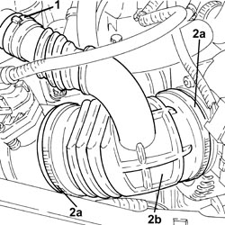

1048A34 HOSE(S) FROM FLOW METER TO AIR SUPPLY CAPACITY CASE - R + R
- Path
- Procedures > 10 ENGINE > 1048 ENGINE AIR SUPPLY CIRCUIT > 1048A VACUUM AIR CIRCUIT > 1048A34 HOSE(S) FROM FLOW METER TO AIR SUPPLY CAPACITY CASE - R + R
- Kind
- repair procedure (removal / refitting; the operation number is the code)
- Applies to
- engines: 2.2 JTS; all production periods
- Interactive page
- https://sloeber94.github.io/elrnDB-aBrrSpdr/en/#/946001901
Applies to: engines: 2.2 JTS; all production periods
 Removing
Removing
 Refitting
Refitting1. Loosen the band and disconnect the branch of the hose from the air flow meter to the throttle casing, resonator side.
2. Loosen the bands (2a) and remove the hose from the air flow meter to the throttle body (2b).

Applies to: engines: 2.2 JTS; all production periods
Refitting
Removing- Replace the sleeve from the air flow meter to the throttle valve in its housing and tighten with the bands.
- Connect the branchd of the hose from the air flow meter to the throttle casing, resonator side and secure it using the band.
Topics that link to this page (20)
- 1004B10 POWER UNIT WITH MANUAL GEARBOX - R.R
- 1004B24 POWER UNIT WITH MANUAL GEARBOX WITH HYDRAULIC SELECTION - R.R.
- 1016C10 SINGLE CYLINDER HEAD - R.R. AND REPLACE GASKET
- 1028H10 CONNECTING ROD AND PISTON SET - R.R
- 1056F17 THROTTLE BODY WITH DVL - R.R.
- 1056F68 INJECTOR SET - R.R. INCLUDING GASKET REPLACEMENT
- 1072B21 AIR INTAKE FUEL MANIFOLD INTERGRATED DUCT R R AND REPLACE GASKET
- 1072B50 AIR CHAMBER - R.R.
- 1072B54 HOSES CONNECTING AIR INTAKE CHAMBER TO INTAKE MANIFOLD(S) - R.R.
- 1072C13 EXHAUST MANIFOLD GASKET - REPLACE
- 1072C16 EXHAUST MANIFOLD WITH CATALYTIC CONVERTER - R.R.
- 1080E28 ENABLEMENT SOLENOID FOR FLOW OF FUEL VAPOUR TO INLET - R+R
- 1092A10 CRANKSHAFT PULLEY - R + R
- 1092G10 SINGLE ENGINE BELT - R.R
- 4130B20 POWER STEERING PUMP - R.R.
- 4130B52 HEAT EXCHANGER PIPE - R+R
- 4130B54 RETURN PIPE FROM HEAT EXCHANGER PIPE TO POWER STEERING FLUID RESEVIOR - R.R.
- 5040A20 AIR CONDITIONING COMPRESSOR - R+R - INCLUDES FLUID LEVEL CHECK AND TOP UP IF NECESSARY
- 5530A10 ALTERNATOR - R+R
- 5540B53 BULB (ONE) FOR RIGHT LIGHT CLUSTER - R.R.